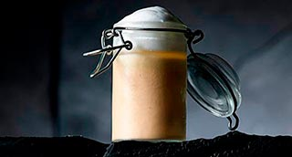

Capuccino de Garbanzos con Foie Gras y nuez Moscada
Garbanzos, Foie Gras, Nuez moscada

| Garbanzos escurridos | 400 gr. |
| Puerro | 1 un. |
| Foie (conserva) | 100 gr. |
| Mantequilla | 40 gr. |
| Aceite de oliva | 25 gr. |
| Caldo de ave | 1 l. |
| Nata | 100 ml. |
| Sal | 5 gr. |
| Leche | 100 ml. |
| Nuez moscada | 2 gr. |
-
Garbanzos/Foie
- Cortar el puerro en juliana, rehogar lo unos minutos con el aceite y la mantequilla sin que tome color.
- Añádir los garbanzos escurridos y lavados, sofreír un par de minutos más.
- Agregar el caldo hirviendo y dejar cocer a fuego lento tapado 15'. Parar el fuego y añadir el foie gras.
- Triturar con el túrmix, añadir la nata, rectificar de sal y pasar por un chino.
- Reservar en caliente
- Infusionar un par de minutos la leche con la nuez moscada. Pasar por un colador fino.
- Introducir en un sifón, poner una carga y ya está listo para servir. Acabado/Presentación
- En un vaso de chupito, taza de café o similar colocar la crema de garbanzos muy caliente.
- Disponer la espuma de leche y espolvorear con un poco de nuez moscada molida.
- Servir inmediatamente.